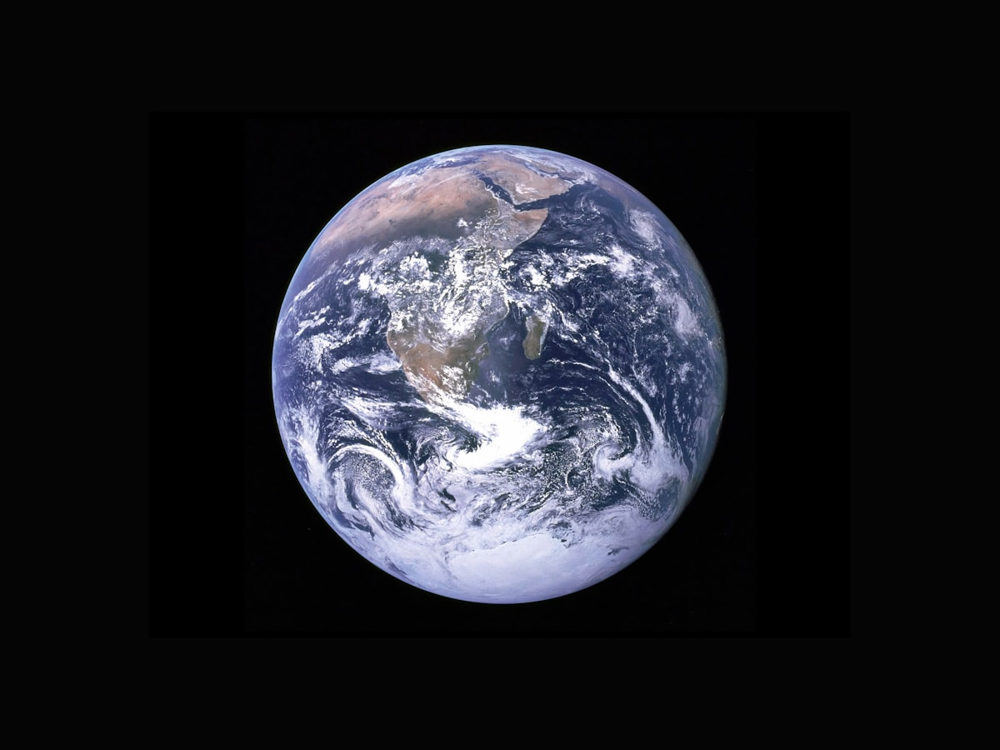
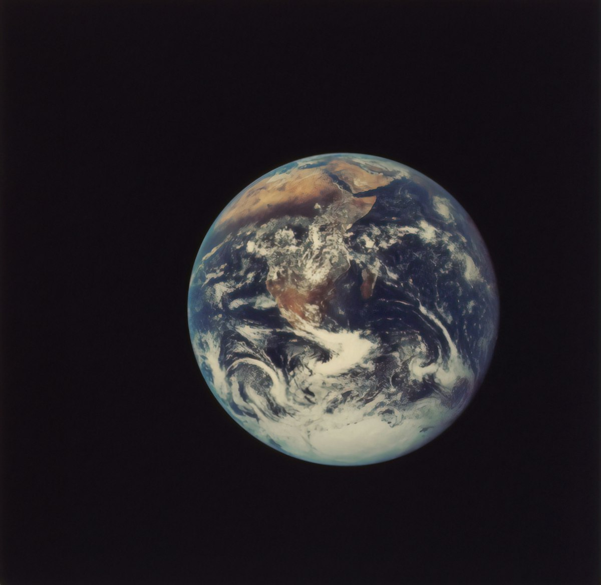
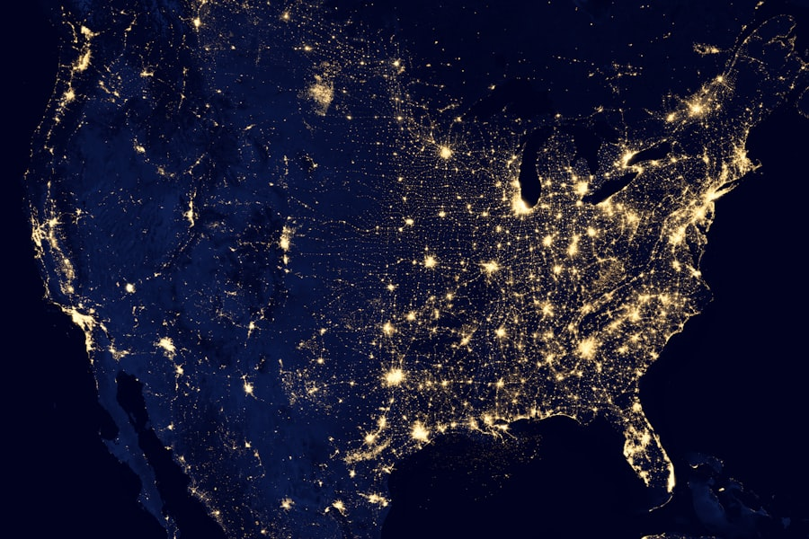
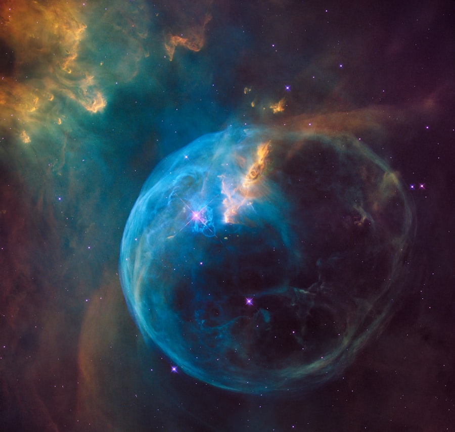
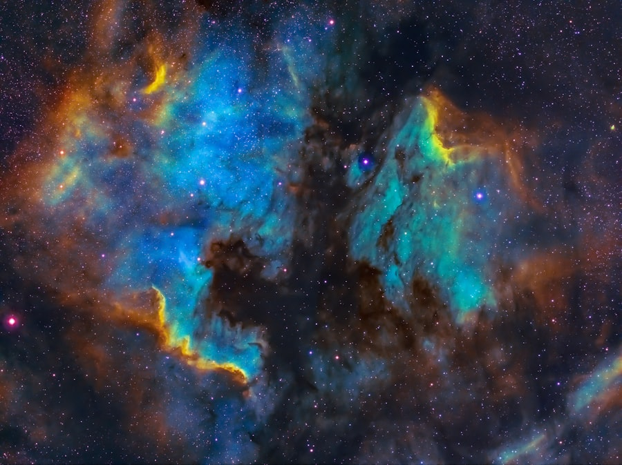
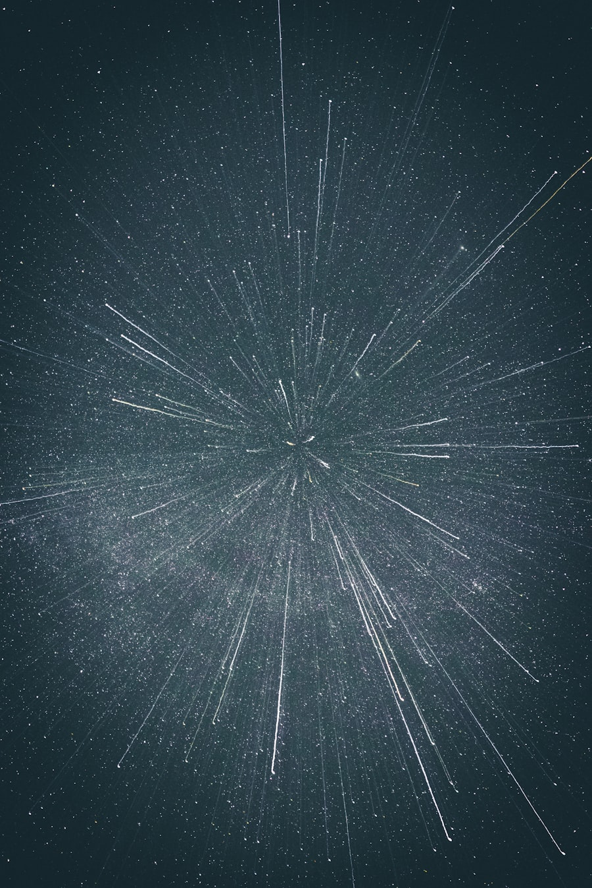

Diameter
About 12,742 km across the equator.
Third Planet from the Sun
Earth is a living world of deep oceans, drifting clouds, and diverse ecosystems. It is the only known planet that supports life.


Earth formed about 4.5 billion years ago and has a layered structure made of crust, mantle, and core. Its atmosphere protects life and helps regulate temperature.
Fast reference points about Earth's structure, climate support systems, and orbital behavior.
About 12,742 km across the equator.
Earth has one moon that stabilizes axial tilt and tides.
Primarily nitrogen and oxygen with trace gases.
Helps shield the planet from charged solar particles.
Polar, temperate, and tropical regions shape biodiversity.
Moving plates form mountains, oceans, and earthquakes.
A visual sample of Earth from orbit, continents, cloud systems, and night lights.




